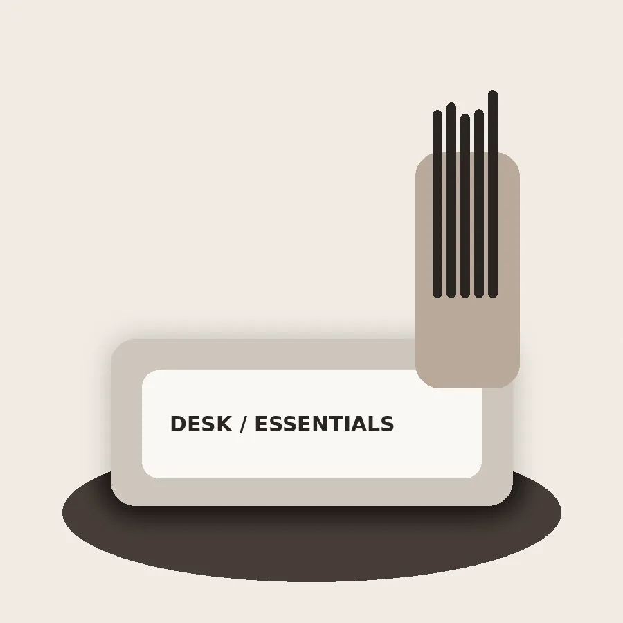

DESK
How to build a calmer desk
Start with the tools you use every day, then remove the rest. A small, intentional workspace makes room for better attention.
JOURNAL
Stories and practical notes for a more intentional desk.

DESK
Start with the tools you use every day, then remove the rest. A small, intentional workspace makes room for better attention.

WRITING
Writing by hand slows the process just enough to help ideas become visible. Choose paper that makes you want to return.

GIFTING
A good stationery gift is personal without being complicated: something beautiful, useful and easy to make part of a routine.